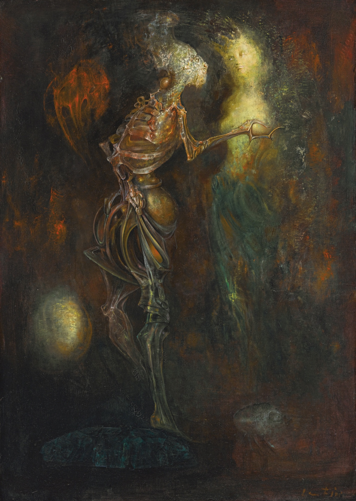

Lágrimas de Eros · Obra 105 de 121
Amor incondicional (L'Amour sans condition)
Leonor Fini

Una figura de esqueleto, luminosa, sobre fondo oscuro. Bataille la fecha en 1959.
Lo que hace que destaque
Una figura de esqueleto, luminosa, sobre fondo oscuro. Bataille la fecha en 1959.
Contexto histórico
No aparece en el catálogo de pinturas del sitio oficial. Webs secundarias (Tumblr) dan un «L'Amour sans condition» de 1958, óleo sobre lienzo de 36 × 25½ pulgadas, en la Weinstein Gallery de San Francisco; no se ha podido confirmar en una fuente fiable. La imagen de antes era la lámina de «La habitación» (La Chambre noire), que pasa a la obra 110. La de ahora es la del lote de Sotheby's titulado «L'Amour sans condition»: coinciden título y medidas, pero no se ha cotejado con la lámina de la p. 186, que falta. Sotheby's no da fecha (otras webs dicen 1958); procedencia: Galleria Galatea y Galleria Il Fauno de Turín; bibliografía: Jelenski 1968, p. 89.
Autoría y procedencia
Leonor Fini (1907-1996), pintora, diseñadora e ilustradora argentina-italiana afincada en París, figura destacada del surrealismo independiente con un imaginario de esfinges, androginia y metamorfosis.
En los libros
Las lágrimas de Eros, de Georges Bataille · Lámina de la p. 186
Ficha pendiente de contrastar con fuentes académicas.